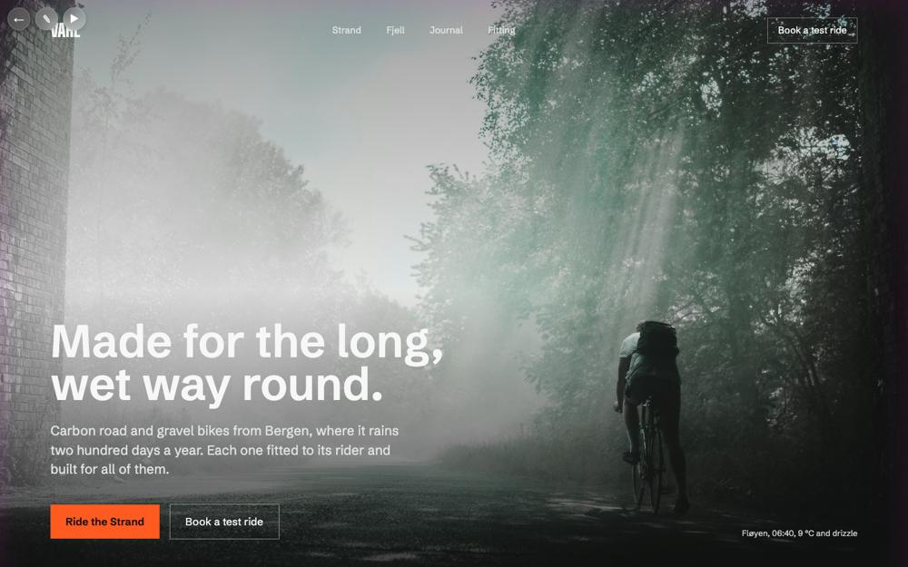
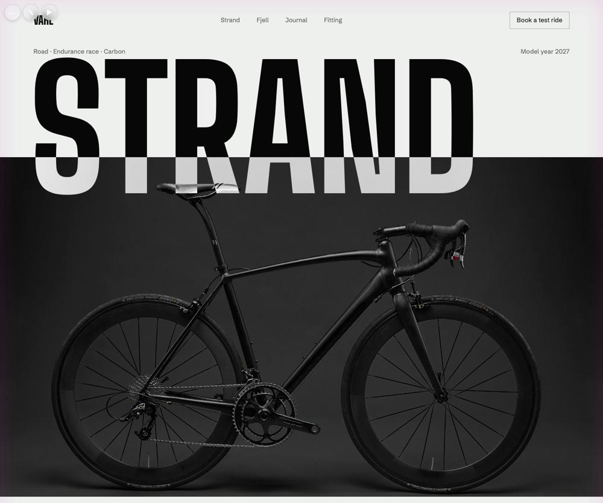
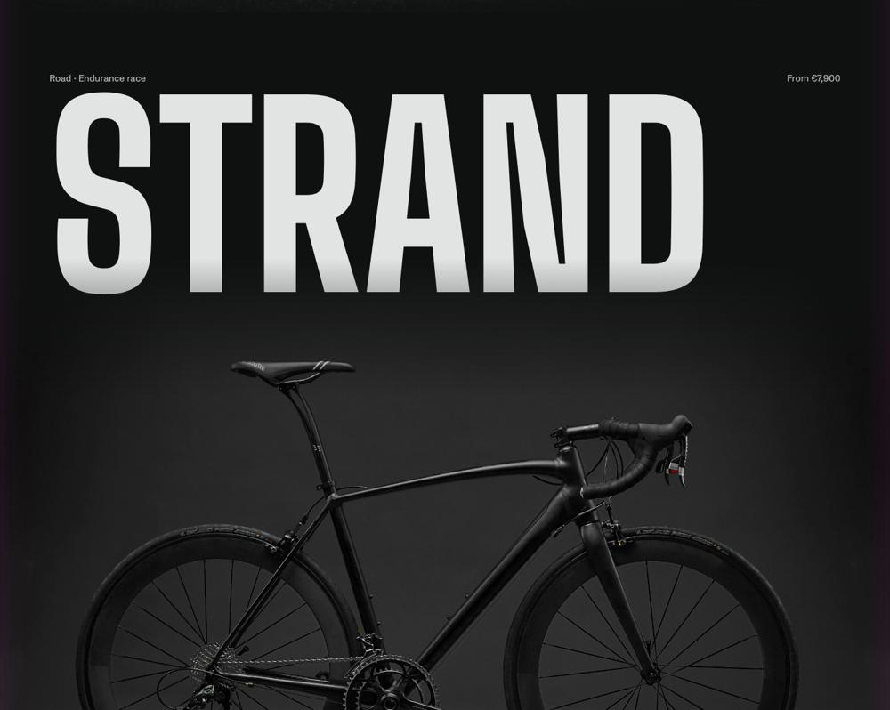
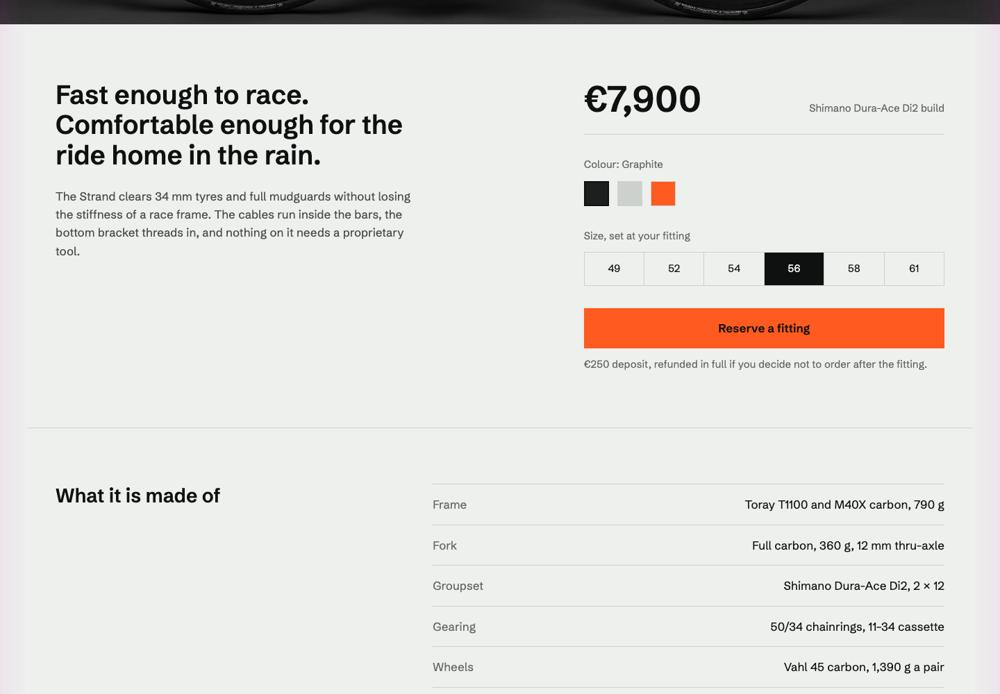
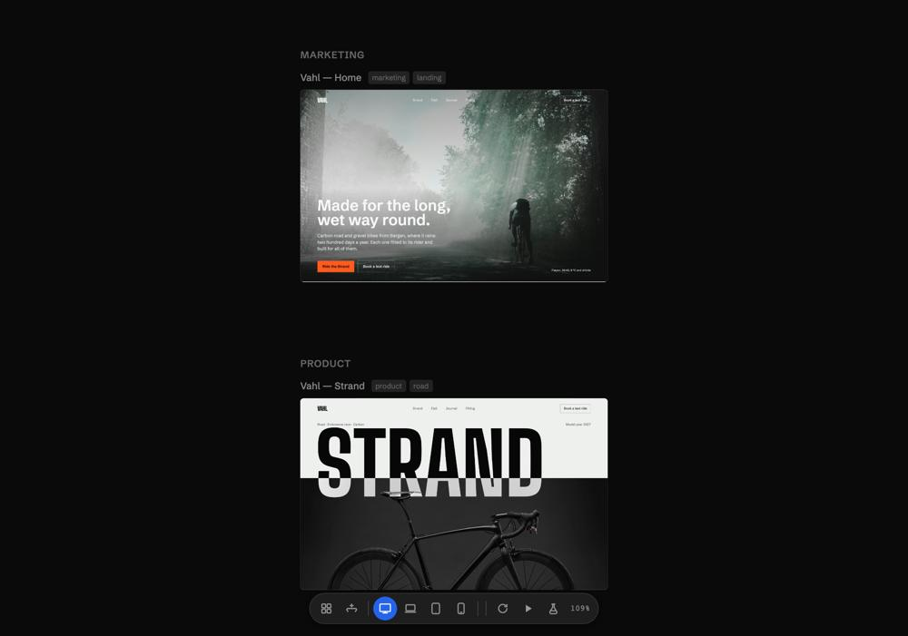

Three silent films made from Caret's real interface, scripted frame by frame. They are composed for phones first, because that is where most people will see them, with a desktop cut from the same script. The project on screen is Vahl, a carbon road-bike maker designed for these films.
A fictional maker of carbon road and gravel bikes in Bergen. Its pages are real Caret design pages: React files in .caret/pages/, styled only with the foundation's tokens, with every visible element carrying a data-caret-id. They run unmodified in Caret's own canvas runtime, which is how the canvas shot below was made.





neutral-100
Ink neutral-950
Signal brand-500
Big Shoulders Display for model names
Schibsted Grotesk, 17px, ×1.333
Sharp corners, flat, 8px grid
Both typefaces are outside Caret's list of AI design habits, and both load through Caret's own font pipeline. The theme CSS was generated by Caret's own code from the foundation file, as the app would. Still to build after approval: Fjell (gravel), Journal, Fitting and Test ride, so the canvas has six pages in three groups.
1080×1350, rendered at 2160×2700 and 60fps. 4:5 fills most of a phone screen in X, LinkedIn and Instagram feeds and still sits well on desktop.
1920×1080 for YouTube, the README and desktop. The camera follows the same subjects, framed wider.
Any text the viewer has to read is at least 34px tall on the 1080px frame, about 12pt on a phone. For Caret's 13px interface text, that means the phone frame shows at most about 410px of the window, which is roughly the width of the chat panel.
The whole window appears for at most 1.2s and never carries text the viewer needs. Everything readable happens close up.
On the phone cut, captions sit in a band at the top of the frame at 52px semibold (about 19pt). On desktop they sit bottom-left at 40px. No text goes in the bottom 15% of the phone frame, where feed apps draw their buttons.
Every film opens on its payoff, because a phone viewer decides to keep watching before any setup has played.
Hero.tsx are written for the film, in the exact formats Caret's chat uses.The one idea: Vahl's design is real React in .caret/, in the same repo as its shop. You edit it on a live page, the change is a file you can review, and Caret syncs it into the shop's own code, in either direction.
The one idea: you say what the picture is, and Caret makes it from Vahl's own foundation, so it already belongs on the page. You branch it until it is right and use it by name.
The one idea: change Vahl's pages by touching them. Drag for the simple things, paint and describe the harder ones, ask for three versions when unsure, and choose the skill and libraries the AI designs with.